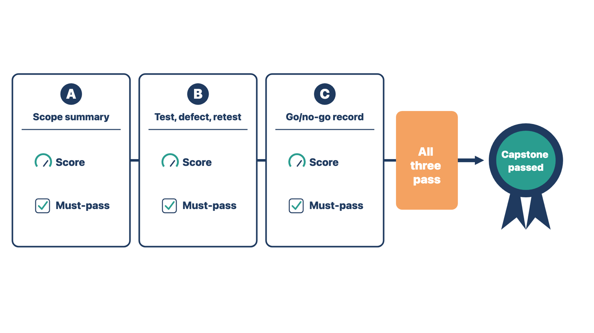

If you have done this task on a real project, try this first, then
compare with the worked example.
A small two-location family clinic went live four weeks ago. Its exit
criteria include: no critical defects, results interface errors cleared
within one business day, and staff using the approved check-out
workflow. The planned stabilization period ends Friday.
Pull the approved exit criteria. Done: the three
criteria above came from the readiness plan.
Gather evidence for each criterion. Done: no
critical defects are open (met). Results errors were cleared within one
business day on 18 of 20 days (not met). At the second location,
front-desk staff print a paper check-out slip because the screen does
not show the next visit (not met).
Report the result to the sponsor. Your turn: what
do you report, and what do you recommend?
Find owners for each gap. Your turn: who should own
each unmet criterion?
Choose the route for the fix. Your turn: the
check-out screen needs a configuration change. What route does it take,
and what evidence closes it?
Plan the second exit review. Your turn: what must
be true, or formally accepted, before stabilization ends?
Field assignment
Complete the launch for the practice case, Cedar Point Internal
Medicine (main clinic and Lakeshore), or the casebook. Do not use a real
project.
Simulate final activation authorization.
Operate the command and issue process.
Triage normal, high-impact, and downtime events.
Reconcile the approved daily measures.
Run end-of-day huddles and issue status.
Apply stabilization exit criteria.
Conduct simulated day, week, and month follow-up.
Transfer monitoring and support through demonstration, with a
support knowledge pack.
Close delivered, changed, deferred, and open scope.
Self-check rubric. Before you finish, check your
work against these points:
Knowledge check
Why is go-live the beginning of an operating transition rather than
the end of implementation?
What information belongs in the central issue record?
Why must emergency changes still be controlled?
What should determine the end of stabilization?
What makes an operational handoff stronger than sending
documents?
How should an EHRIC certificate holder describe the credential, and
what may they not claim?
Spaced review
These questions come from earlier modules. Answer them without
looking back.
(Module 11) The readiness dashboard reads 96 percent complete. One
row shows that the restore test has not passed. How should you report
readiness to the decision-makers?
(Module 11) A new "unsigned orders" alert has a trigger and a
recipient role, but no aging rule and no backup owner. What would you
add before go-live, and why?
(Module 9) A test claim returns a 999 "Accepted." The billing lead
says claims are ready for go-live. What does the 999 not tell you?
(Module 8) A test conversion loaded 4,980 of 5,000 patient records.
The vendor says 99.6 percent is good enough. What must happen before
acceptance?
(Module 1) A clinic manager says sales promised a Spanish portal at
no extra cost. It appears only in the sales notes. How do you sort this
commitment, and what do you record?
(Module 3) Two days after the kickoff meeting, nobody has sent the
decisions and actions. What should have happened?
Module 12 gate —
implementation complete
Who must be in the room for the closure review: the
client project owner, the operations owner, and the support lead.
Required evidence: the practice-case command and
issue record, reconciliation and huddle status, stabilization exit
review, transfer record with knowledge pack, and closure record.
Course
requirements: the capstone and the certificate
This section covers course steps, not implementation
steps.
The capstone
The capstone asks you to produce three pieces of implementation work
for one fictional client, Northline Care Group. Each
piece is a document an implementation specialist writes on the job. The
Capstone Candidate Packet holds the full instructions,
the case facts, and the templates. The Capstone Rubric
(candidate version) holds the scoring criteria. Read both
before you start. This section only describes the capstone. If anything
here differs, the packet controls.
Artifact
What you produce
Course skills it draws on
A. Initial scope summary
The scope record you would issue after the sales handoff
Module 1 (handoff, scope, authority)
B. Test case, defect, and retest record
One requirements-based test, the defect it finds, and the retest
after the fix
Module 7 (testing, defects, retest)
C. Go/no-go decision record
The go-live decision record, with the criteria, evidence, and open
risks behind it
Module 11 and this module (readiness and decision)
Plan on about 6 to 8 hours in total. You may complete the three
artifacts in any order. You may complete the capstone before or after
the final exam. You must pass both.
Rules for every artifact. The packet lists them in
full. The most important are:
Work only from the Northline casebook sections and added facts the
packet names for each artifact. Never use a real client, employer,
patient, or project, even with names removed.
Do not invent approvals, test results, or sign-offs. If the case
does not say something was approved, record it as open and name who
should decide.
You are the implementation specialist. You identify clinical,
billing, privacy, security, and legal decisions and route them to the
named authority. You do not make them.
Show what is unresolved, with its effect and its owner.
For the artifacts themselves, you may use AI tools only to check
spelling and grammar. You may use them while studying the modules.
You may study the book's worked examples, but do not copy their
content into your artifacts.
How it is scored. A qualified reviewer scores each
artifact on its own. Each artifact has five criteria worth 0, 1, or 2
points, for 10 points per artifact. Each artifact also has must-pass
criteria. If you miss any one, that artifact cannot pass, whatever its
points. Points do not carry over between artifacts. A strong artifact
cannot make up for a weak one. The advisory panel and a psychometric
consultant will set the passing score for each artifact after the
pilot.
Each artifact comes back as Pass or
Resubmit. Written feedback names the criterion and what
is missing. You may resubmit each artifact once for free. The packet
explains deadlines, later resubmissions, and appeals.

Figure 12.9. Notice that the capstone passes only when all three artifacts pass on their own.
Before you submit: check each capstone artifact
against the packet's "What a reviewer looks for" list and the rubric's
must-pass criteria.
The certificate
The program is the Electronic Health Record Implementation
Certificate (EHRIC), issued by MAS Publishing Company. It is an
assessment-based certificate program. To earn the certificate, you
must:
complete all course modules and pass each module quiz at 80% or
higher (you may retake quizzes);
pass the capstone (all three artifacts); and
pass the proctored final exam.
People who earn it are certificate holders. They are
not "certified." You may describe yourself as a holder of the Electronic
Health Record Implementation Certificate. Do not write "certified." Do
not add letters after your name, such as "Jane Doe, EHRIC." Do not imply
licensure.
The certificate does not certify clinical, legal, coding or billing,
privacy-officer, or security-officer competence. It is not a license,
not a vendor certification, and not certification in any software
product. The program is not accredited at this time. MAS Publishing
Company intends to apply for accreditation under the ICE 1100 standard
of the Institute for Credentialing Excellence (ICE). Applying does not
guarantee accreditation.